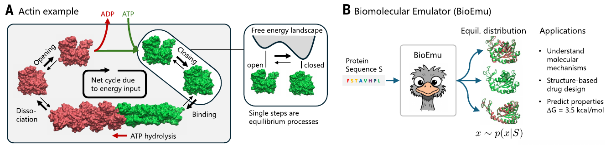
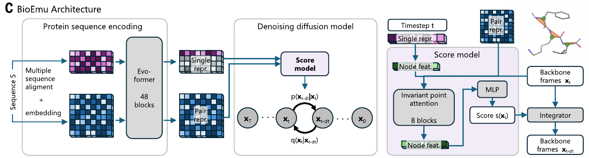
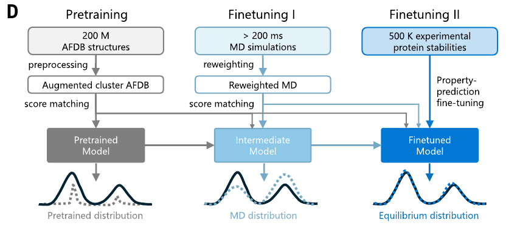
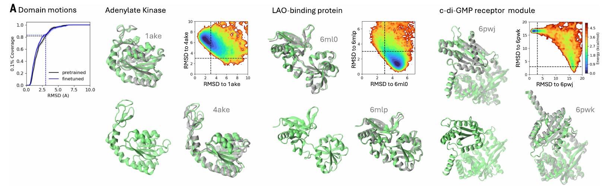
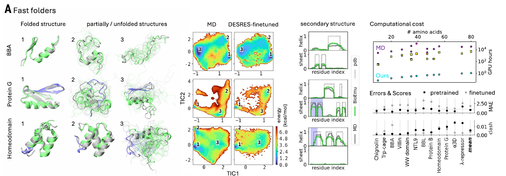

Parte I · ArtículoParte II · LBPCheYJournal Club · Oct 2026
BioEmu
Emulación escalable de ensambles de equilibrio de proteínas con aprendizaje profundo generativo —
y su aplicación a la quimera LBPCheY
10⁴–10⁵×más barato que MD
~1kcal/molerror en energía libre
246estructuras de LBPCheY
Lewis et al. · Science 389, eadv9817 (2025) · github.com/jtuxman/lbpchey-bioemu
0:00
1 / 10
01 · El problema
La función depende de un ensamble

Fig. 1A–B, Lewis et al. — (A) la actina cicla entre estados abierto/cerrado; cada paso es un equilibrio. (B) BioEmu: secuencia → muestras x ~ p(x|S).
AlphaFold
Da una estructura: una foto, sin poblaciones.
Dinámica molecular
Da el ensamble, pero cruzar barreras requiere µs–ms: años de GPU.
BioEmu
Muestrea la distribución de equilibrio directamente: miles de estructuras/hora en 1 GPU.
0:20
2 / 10
02 · Cómo funciona
Evoformer + difusión, en tres etapas

Fig. 1C — MSA → Evoformer (AF2) → representaciones single/pair → modelo de score que elimina ruido de los marcos del backbone.

Fig. 1D — cada etapa acerca la distribución aprendida a la de equilibrio.
1200 M estructuras AFDB → diversidad conformacional
2>200 ms de MD repesada → física de equilibrio
3500 k estabilidades experimentales (MEGAscale) → calibración
La novedad no es la arquitectura, sino cómo integra datos heterogéneos: estructuras, simulaciones y mediciones escalares.
1:10
3 / 10
03 · Resultado 1 — Fig. 2
Recupera estados funcionales conocidos

Fig. 2A — movimientos de dominio. Verde: BioEmu; gris: PDB. Los mapas de energía muestran ambos estados (abierto/cerrado) poblados. Nótese la LAO-binding protein: proteína periplásmica de unión, de la misma familia que LBP.
83%movimientos de dominio
86%bolsillos crípticos (holo)
56%bolsillos crípticos (apo)
Cobertura: % de estados de referencia alcanzados con RMSD ≤ 3 Å. El éxito no depende de la similitud con el set de entrenamiento → generaliza.
2:05
4 / 10
04 · Resultado 2 — Fig. 3
Reproduce paisajes de energía libre de MD

Fig. 3A — proteínas de plegamiento rápido (DESRES). Mapas MD vs. BioEmu sobre TICs; derecha: costo computacional (MD morado vs. BioEmu turquesa, escala log).
0.74kcal/molMAE de energía libre vs. MD (12 fast folders)
10⁴×menos horas-GPU
Mismos estados (1, 2, 3) y mismas poblaciones relativas que simulaciones de ms. También funciona en dominios CATH, una IDP (complexina II) y una tetraspanina (CD9).
Clave para nuestro análisis: las poblaciones de las muestras son termodinámica. Contar estructuras ≈ medir energía libre.
3:35
6 / 10
Parte II · Nuestro experimento
LBPCheY: dos folds rígidos y una bisagra
Quimera de 339 aa
● LBP 1–140
● CheY 141–243
● LBP 244–339
AF3 (pTM 0.81)
→
BioEmu 300
→
246 válidas
→
HPacker + OpenMM
RMSD Cα vs. AF3
Media ± SD
CheY
0.81 ± 0.30 Å
LBP
2.30 ± 1.87 Å
Global
3.56 ± 2.32 Å
Distribución de RMSD de Cα por lóbulo, n = 246.
Interpretación
CheY conserva su fold (<1 Å): la inserción no lo desestabiliza.
LBP es más variable: está partida en dos segmentos y tiene su propia bisagra; la cola hasta 18.7 Å son pocas muestras aisladas.
RMSD global > RMSD de cada lóbulo → la diferencia es movimiento relativo entre dominios, no desplegamiento.
4:20
7 / 10
Parte II · Paisaje de energía libre
Un estado dominante, centrado en AF3
ΔG = −kT ln(pi/pmax), T = 300 K. (a) PCA de la posición de CheY tras alinear en LBP; (b) giro de CheY vs. distancia entre centros. ⭐ = AF3.
Un solo pozo principal (<1 kcal/mol) que contiene a AF3: la predicción estática es el estado más probable.
El pozo es ancho: CheY oscila ~±50° y la distancia varía 24–32 Å sin barreras → bisagra flexible, no dos estados discretos.
Islas periféricas (~3 kcal/mol): giros de ±110–150° y aperturas de 36 Å. Accesibles a 300 K, pero cada una son 1–2 muestras.
5:20
8 / 10
Parte II · Perfiles 1D y límites
¿Qué podemos afirmar con 246 muestras?
Izq.: distancia entre centros (mínimo plano 26–28 Å, AF3 = 27.8 Å). Der.: giro de CheY (mínimo en 0° = AF3; pozos secundarios a −110° y +110/+140°).
Sí podemos decir
Distancia: pozo plano y asimétrico, la apertura cuesta menos que el cierre.
Giro: CheY rota libremente ±50° (<1.5 kcal/mol).
246/246 muestras plegadas en ambos dominios → la quimera es estable.
Con cautela
Resolución máxima: kT ln(246) ≈ 3.3 kcal/mol. Por eso "ΔG desplegado > 3.3" es un límite inferior.
Pozos a ~3 kcal/mol = 1–2 muestras: necesitan más muestreo.
BioEmu: sin ligando, sin cinética, error ~1 kcal/mol.
6:20
9 / 10
Conclusiones
BioEmu (Lewis et al. 2025)
Muestrea ensambles de equilibrio a partir de la secuencia
Recupera estados funcionales (83–86%) y paisajes de MD (~1 kcal/mol)
PPFT: calibra con datos experimentales escalares
10⁴–10⁵× más barato: no reemplaza a MD, la complementa
LBPCheY
Ambos folds se conservan (CheY 0.81 Å)
Unidos por una bisagra flexible: ~13 Å de apertura y ±50° de giro
Un estado dominante que coincide con AF3
Estados raros (~3 kcal/mol) por confirmar
🔭 Siguiente: más muestras (≥1000) para resolver los estados raros · comparar con MD explícita · el efecto de la leucina sobre la bisagra requiere MD (BioEmu no modela ligandos).